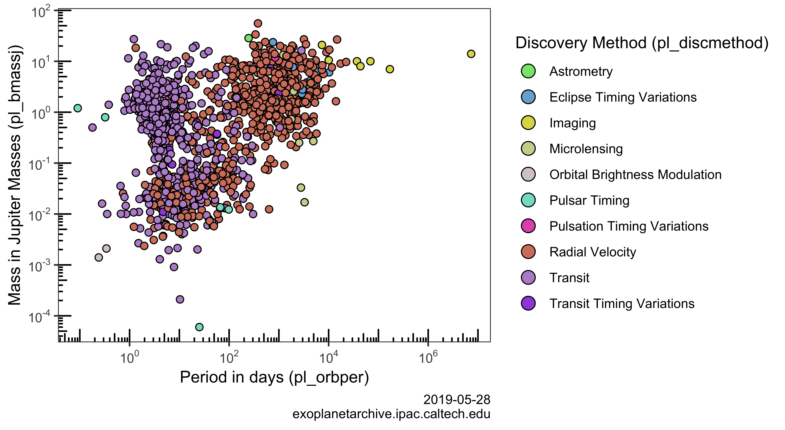

The goal of exoplanets is to provide access to NASA’s Exoplanet Archive database in R. The functionality of this package is very minimal and is simply an R interface to access exoplanet data in the following ways:
- By providing a table name
- By providing a query URL

Example
This is a basic example which shows you how to access data from the exoplanet table:
library(exoplanets)
library(tibble)
exoplanets <- exo()
as_tibble(exoplanets)
#> # A tibble: 4,055 x 82
#> pl_hostname pl_letter pl_name pl_discmethod pl_controvflag pl_pnum
#> <chr> <chr> <chr> <chr> <int> <int>
#> 1 Kepler-150 d Kepler… Transit 0 5
#> 2 Kepler-150 e Kepler… Transit 0 5
#> 3 Kepler-151 b Kepler… Transit 0 2
#> 4 Kepler-151 c Kepler… Transit 0 2
#> 5 Kepler-152 b Kepler… Transit 0 2
#> 6 Kepler-152 c Kepler… Transit 0 2
#> 7 Kepler-153 b Kepler… Transit 0 2
#> 8 Kepler-153 c Kepler… Transit 0 2
#> 9 Kepler-154 b Kepler… Transit 0 5
#> 10 Kepler-154 c Kepler… Transit 0 5
#> # … with 4,045 more rows, and 76 more variables: pl_orbper <dbl>,
#> # pl_orbpererr1 <dbl>, pl_orbpererr2 <dbl>, pl_orbperlim <int>,
#> # pl_orbpern <int>, pl_orbsmax <dbl>, pl_orbsmaxerr1 <dbl>,
#> # pl_orbsmaxerr2 <dbl>, pl_orbsmaxlim <int>, pl_orbsmaxn <int>,
#> # pl_orbeccen <dbl>, pl_orbeccenerr1 <dbl>, pl_orbeccenerr2 <dbl>,
#> # pl_orbeccenlim <int>, pl_orbeccenn <int>, pl_orbincl <dbl>,
#> # pl_orbinclerr1 <dbl>, pl_orbinclerr2 <dbl>, pl_orbincllim <int>,
#> # pl_orbincln <int>, pl_bmassj <dbl>, pl_bmassjerr1 <dbl>,
#> # pl_bmassjerr2 <dbl>, pl_bmassjlim <int>, pl_bmassn <int>,
#> # pl_bmassprov <chr>, pl_radj <dbl>, pl_radjerr1 <dbl>,
#> # pl_radjerr2 <dbl>, pl_radjlim <int>, pl_radn <int>, pl_dens <dbl>,
#> # pl_denserr1 <dbl>, pl_denserr2 <dbl>, pl_denslim <int>,
#> # pl_densn <int>, pl_ttvflag <int>, pl_kepflag <int>, pl_k2flag <int>,
#> # ra_str <chr>, dec_str <chr>, ra <dbl>, st_raerr <dbl>, dec <dbl>,
#> # st_decerr <dbl>, st_posn <int>, st_dist <dbl>, st_disterr1 <dbl>,
#> # st_disterr2 <dbl>, st_distlim <int>, st_distn <int>, st_optmag <dbl>,
#> # st_optmagerr <dbl>, st_optmaglim <int>, st_optband <chr>,
#> # gaia_gmag <dbl>, gaia_gmagerr <lgl>, gaia_gmaglim <int>,
#> # st_teff <dbl>, st_tefferr1 <dbl>, st_tefferr2 <dbl>, st_tefflim <int>,
#> # st_teffn <int>, st_mass <dbl>, st_masserr1 <dbl>, st_masserr2 <dbl>,
#> # st_masslim <int>, st_massn <int>, st_rad <dbl>, st_raderr1 <dbl>,
#> # st_raderr2 <dbl>, st_radlim <int>, st_radn <int>, pl_nnotes <int>,
#> # rowupdate <chr>, pl_facility <chr>To access data from a different table you can use the table parameter:
keplernames <- exo(table = "keplernames")
as_tibble(keplernames)
#> # A tibble: 2,354 x 13
#> kepid ra ra_err dec dec_err ra_str dec_str kepoi_name kepler_name
#> <int> <dbl> <dbl> <dbl> <dbl> <chr> <chr> <chr> <chr>
#> 1 1.10e7 293. 0 48.4 0 19h33… +48d26… K01931.02 Kepler-339…
#> 2 5.20e6 296. 0 40.3 0 19h43… +40d18… K01932.02 Kepler-340…
#> 3 5.20e6 296. 0 40.3 0 19h43… +40d18… K01932.01 Kepler-340…
#> 4 7.75e6 290. 0 43.5 0 19h19… +43d28… K01952.03 Kepler-341…
#> 5 7.75e6 290. 0 43.5 0 19h19… +43d28… K01952.01 Kepler-341…
#> 6 7.75e6 290. 0 43.5 0 19h19… +43d28… K01952.02 Kepler-341…
#> 7 7.75e6 290. 0 43.5 0 19h19… +43d28… K01952.04 Kepler-341…
#> 8 9.89e6 293. 0 46.7 0 19h30… +46d43… K01955.01 Kepler-342…
#> 9 9.89e6 293. 0 46.7 0 19h30… +46d43… K01955.04 Kepler-342…
#> 10 9.89e6 293. 0 46.7 0 19h30… +46d43… K01955.02 Kepler-342…
#> # … with 2,344 more rows, and 4 more variables: alt_name <chr>,
#> # tm_designation <chr>, koi_list_flag <chr>, last_update <chr>To get a list of all available tables:
names(exo_tables)
#> [1] "exoplanets" "compositepars"
#> [3] "exomultpars" "aliastable"
#> [5] "microlensing" "cumulative"
#> [7] "q1_q17_dr25_sup_koi" "q1_q17_dr25_koi"
#> [9] "q1_q17_dr24_koi" "q1_q16_koi"
#> [11] "q1_q12_koi" "q1_q8_koi"
#> [13] "q1_q6_koi" "q1_q17_dr25_tce"
#> [15] "q1_q17_dr24_tce" "q1_q16_tce"
#> [17] "q1_q12_tce" "keplerstellar"
#> [19] "q1_q17_dr25_supp_stellar" "q1_q17_dr25_stellar"
#> [21] "q1_q17_dr24_stellar" "q1_q16_stellar"
#> [23] "q1_q12_stellar" "keplertimeseries"
#> [25] "keplernames" "kelttimeseries"
#> [27] "superwasptimeseries" "k2targets"
#> [29] "k2candidates" "k2names"
#> [31] "missionstars" "mission_exocat"To get a vector of column names for a specific table:
str(exo_column_names("cumulative", "default"))
#> chr [1:50] "kepid" "kepoi_name" "kepler_name" "koi_disposition" ...
str(exo_column_names("cumulative", "all"))
#> chr [1:153] "kepid" "kepoi_name" "kepler_name" "ra" "ra_err" "ra_str" ...Finally, you can take a look at the docs and use eco_raw to write out queries in their entirety. Spaces and single quotes will be escaped automatically. The only supported format is CSV so do not request JSON, ipac, or others:
exoplanets2 <- exo_raw("https://exoplanetarchive.ipac.caltech.edu/cgi-bin/nstedAPI/nph-nstedAPI?table=exoplanets")
as_tibble(exoplanets2)
#> # A tibble: 4,055 x 82
#> pl_hostname pl_letter pl_name pl_discmethod pl_controvflag pl_pnum
#> <chr> <chr> <chr> <chr> <int> <int>
#> 1 Kepler-150 d Kepler… Transit 0 5
#> 2 Kepler-150 e Kepler… Transit 0 5
#> 3 Kepler-151 b Kepler… Transit 0 2
#> 4 Kepler-151 c Kepler… Transit 0 2
#> 5 Kepler-152 b Kepler… Transit 0 2
#> 6 Kepler-152 c Kepler… Transit 0 2
#> 7 Kepler-153 b Kepler… Transit 0 2
#> 8 Kepler-153 c Kepler… Transit 0 2
#> 9 Kepler-154 b Kepler… Transit 0 5
#> 10 Kepler-154 c Kepler… Transit 0 5
#> # … with 4,045 more rows, and 76 more variables: pl_orbper <dbl>,
#> # pl_orbpererr1 <dbl>, pl_orbpererr2 <dbl>, pl_orbperlim <int>,
#> # pl_orbpern <int>, pl_orbsmax <dbl>, pl_orbsmaxerr1 <dbl>,
#> # pl_orbsmaxerr2 <dbl>, pl_orbsmaxlim <int>, pl_orbsmaxn <int>,
#> # pl_orbeccen <dbl>, pl_orbeccenerr1 <dbl>, pl_orbeccenerr2 <dbl>,
#> # pl_orbeccenlim <int>, pl_orbeccenn <int>, pl_orbincl <dbl>,
#> # pl_orbinclerr1 <dbl>, pl_orbinclerr2 <dbl>, pl_orbincllim <int>,
#> # pl_orbincln <int>, pl_bmassj <dbl>, pl_bmassjerr1 <dbl>,
#> # pl_bmassjerr2 <dbl>, pl_bmassjlim <int>, pl_bmassn <int>,
#> # pl_bmassprov <chr>, pl_radj <dbl>, pl_radjerr1 <dbl>,
#> # pl_radjerr2 <dbl>, pl_radjlim <int>, pl_radn <int>, pl_dens <dbl>,
#> # pl_denserr1 <dbl>, pl_denserr2 <dbl>, pl_denslim <int>,
#> # pl_densn <int>, pl_ttvflag <int>, pl_kepflag <int>, pl_k2flag <int>,
#> # ra_str <chr>, dec_str <chr>, ra <dbl>, st_raerr <dbl>, dec <dbl>,
#> # st_decerr <dbl>, st_posn <int>, st_dist <dbl>, st_disterr1 <dbl>,
#> # st_disterr2 <dbl>, st_distlim <int>, st_distn <int>, st_optmag <dbl>,
#> # st_optmagerr <dbl>, st_optmaglim <int>, st_optband <chr>,
#> # gaia_gmag <dbl>, gaia_gmagerr <lgl>, gaia_gmaglim <int>,
#> # st_teff <dbl>, st_tefferr1 <dbl>, st_tefferr2 <dbl>, st_tefflim <int>,
#> # st_teffn <int>, st_mass <dbl>, st_masserr1 <dbl>, st_masserr2 <dbl>,
#> # st_masslim <int>, st_massn <int>, st_rad <dbl>, st_raderr1 <dbl>,
#> # st_raderr2 <dbl>, st_radlim <int>, st_radn <int>, pl_nnotes <int>,
#> # rowupdate <chr>, pl_facility <chr>